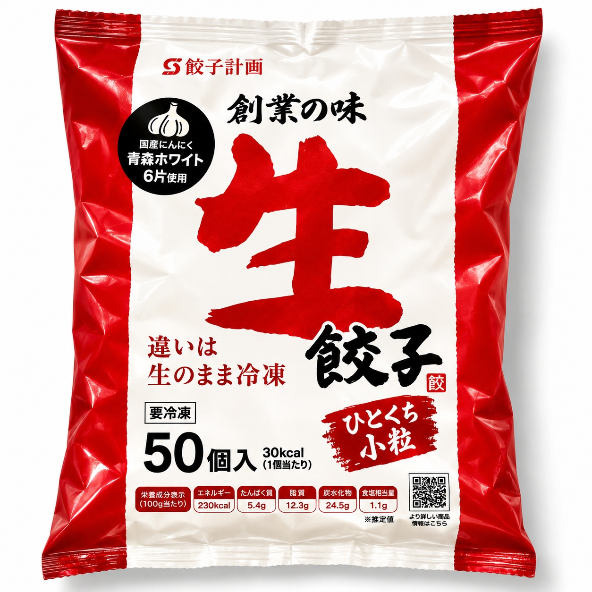

SCENE 01
I036

i 惣菜・加工品
国産ひとくち小粒生餃子
【国産原料にこだわった、ぱくっと食べやすい小粒の生餃子。】
- 内容量650ｇ/ｐ（約13ｇ×50個入り）
- 保存冷凍
- 産地日本
商品の特徴を読む
国産の野菜や豚肉など、こだわりの国産原料でつくった、ひとくちサイズの冷凍生餃子です。1袋に約50個（650g）入っており、ご家庭の食卓で手軽にお楽しみいただけます。 キャベツ、たまねぎ、にんにく、ニラ、しょうがといった野菜から、豚肉、豚脂に至るまで、使用している原料はすべて国産品です。魚介エキスやホタテエキスなどの調味料が、具材の旨みを引き立てます。 小粒サイズなので、焼き餃子はもちろん、水餃子やスープの具材としても使いやすく、食卓のもう一品やお弁当のおかず、おつまみにもぴったりです。ご家族皆様でお召し上がりください。 商品は冷凍でお届けします。ご家庭の冷凍庫で保存でき、賞味期限は発送日から3ヶ月です。ストックしておけば、いつでも手軽にご利用いただけます。
公式サイトへ移動します。価格・在庫・配送条件は移動先で最終確認してください。
SCENE 02
キャベツ、たまねぎ、にんにく、ニラ、しょうがといった野菜から、豚肉、豚脂に至るまで、使用している原料はすべて国産品です。
SCENE 03
1袋に約50個（650g）入っており、ご家庭の食卓で手軽にお楽しみいただけます。
PRODUCT INFORMATION
購入前に確認したい商品情報
- 商品名
- 国産ひとくち小粒生餃子
- 商品規格
- 650ｇ/ｐ（約13ｇ×50個入り）
- 保存方法
- 冷凍
- 原産国
- 日本
- 製造地
- 日本
- 賞味期限
- 発送日より3ヶ月
原材料
野菜（キャベツ（国産）、たまねぎ（国産）、にんにく（国産）、ニラ（国産）、しょうが（国産））、豚脂（国産）、豚肉（国産）、ごま油、みそ、小麦粉加工品、落花生油、しょうゆ、食塩、がらスープ、灰持酒、加工黒糖、魚介エキス調味料、カキエキス、こしょう、ホタテエキス、還元水あめ、アミノ酸液、皮（小麦粉、グルテン、マルトデキストリン、植物油脂、食塩、粉末油脂、でん粉）／加工デンプン、調味料（アミノ酸等）、トレハロース、ソルビトール、乳酸Na、調味料（アミノ酸等）、（一部に小麦・乳成分・落花生・ごま・大豆・鶏肉・豚肉・りんごを含む）
FAQ
購入前のよくあるご質問
商品の容量・規格を教えてください。
掲載の商品規格は「650ｇ/ｐ（約13ｇ×50個入り）」です。選択できる内容とご注文時の詳細は商品ページでご確認ください。
保存方法を教えてください。
保存方法は「冷凍」です。賞味期限は「発送日より3ヶ月」です。
MEAT PLUS OFFICIAL SHOP
【国産原料にこだわった、ぱくっと食べやすい小粒の生餃子。】
仕入れ・加工・梱包・発送まで自社で行うMEAT PLUSの公式オンラインショップでご注文いただけます。
公式オンラインショップで購入する商品選びの要点
国産ひとくち小粒生餃子。商品規格：650ｇ/ｐ（約13ｇ×50個入り）。保存方法：冷凍。原産国：日本。製造地：日本。賞味期限：発送日より3ヶ月。
価格・在庫・配送日・送料・ギフト対応は、公式通販の商品ページで最新情報をご確認ください。
もう少し、見てみる？
こちらの商品もチェック